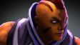
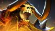
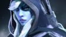
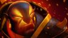
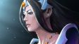
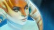
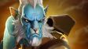
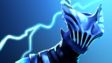
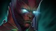
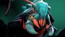

Монахи Турстаркури наблюдали за неровными долинами, раскинувшимися под их горным монастырем, в то время, как вторженцы, волна за волной, набегали на стоявшие у подножья королевства. Аскетичные, прагматичные, они пребывали в медитации, не знавшей никаких богов, засев в своем отрешенном от суетного мира высокогорном гнезде. Потом грянул легион Мертвого бога — крестоносцы, уничтожающие все местные культы и заменяющие их своей верой, родом из земель, известных лишь безжалостностью и тысячелетними войнами. Легионы мертвецов осадили Турстаркури. Две недели монастырь едва сдерживал натиск врагов, а те немногие монахи, что решили разузнать, в чем дело, восприняли нападение как попытку бесовских иллюзий отвлечь их от медитации. Они были убиты прямо на своих шелковых подстилках. Выжил лишь один молодой послушник — пилигрим, пришедший в поисках мудрости, но еще не принятый в монастырь. С ужасом он смотрел за тем, как монахи, которым он еще недавно подавал чаи и травы, гибли на своих местах, а потом присоединялись к рядам служителей Мертвого бога. Схватив охапку ценнейших священных писаний, он бежал в более безопасное место, поклявшись не только искоренить армию колдунов Мертвого бога, но и положить конец любой, какой бы то ни было, магии.
Anti-Mage

До начала всего в абсолютной пустоте обитала единая сущность — первородное сознание. Бесконечное, невероятное, оно следовало лишь своим загадочным целям. Вместе с громом, ознаменовавшим создание вселенной, раздался и треск: первородное сознание раскололось. Два самых крупных его осколка, которые много времени спустя прозовут Светом и Тьмой, открыли друг в друге злейших врагов, и посвятили всё свое существование полному уничтожению противника. Война стала угрожать существованию едва зародившегося космоса, и тогда третий осколок изъявил желание вмешаться. Чистый разум, назвавший себя Зет, хотел прекратить этот хаос и восстановить единство бытия. Пораженный неизмеримой жестокостью братьев, Зет собрал все свои силы и одной яркой вспышкой одолел обе враждующие стороны. Два противника были сжаты воедино, пока не образовали космическое тело, отправленное кружить вокруг неизвестной планеты в далеком краю вселенной. Зет почти полностью лишился сил, но во вселенной воцарился порядок. Обратив свой взор на созданную темницу, Зет направил остатки сил на ее охрану. Многие тысячелетия страж оставался непоколебимым. Планета расцветала, полная жизни и сует, освобожденная от мыслей об ужасах, таящихся под поверхностью ночного светила, и стараниях Зета их сдержать. Но когда внутренняя схватка дошла до такой силы, что поверхность спутника начала трещать по швам, Зет понял, что его истощенных сил больше не достаточно. Спутник разорвался на кусочки и выпустил на волю древних узников, жаждущих битвы. Взрыв отбросил Зета на далекий край галактики, преобразив его сущность. Он разбился на множество осколков, лишенных единой формы и мысли, да удерживаемых лишь энергией парящего разума. Подавив чувство собственной разрозненности, Зет помчался в сторону возобновившейся битвы братьев. В этот раз он знал, что нужно делать. Чтобы положить конец вечной войне, призраков былого сознания нужно либо объединить, либо уничтожить…
Arc Warden

Bloodseeker Стригвир — ритуально посвященный охотник, гончая Бескожих близнецов, посланный с туманных вершин Ксакатокатля на поиски крови. Бескожим требуются огромнейшие количества крови, чтобы насытиться и удовлетвориться. Если бы не сделка со жрецами народов, живущими на верхних плато, то вскоре все население горных гряд было бы уничтожено. Договор гласил, что в мир будет выходить охотник за кровью — Стригвир. Любая пролитая жизненная энергия крови сразу же передается близнецам через священные знаки на его оружии и экипировке. За долгие годы такой жизни он стал подобен бешеному псу. В бою он свиреп как ненасытный шакал. Говорят, что во время кровопролитного боя за его маской можно разглядеть черты лиц самих Бескожих, лично контролирующих свою гончую.
Bloodseeker

Путники, рассказывающие истории про Гондара по прозвищу Bounty Hunter, и сами не знают, что в них правда, а что ложь. Одни перешептываются, говоря, что его бросили еще котенком, и научиться скрываться и выслеживать ему пришлось, чтобы просто выжить. Другие слышали, что он осиротел на войне, и был взят под крыло великим Соруком Охотником, который показывал Гондару приемы боя на клинках и с которым они вдвоем прочесывали темные рощи, выходя на большую охоту. А другие, в свою очередь, думают, что он был обычным уличным оборванцем, взращенным в гильдии карманников и воров, где его обучили скрытности и запутыванию следов. Cобирающиеся вокруг костров в далеких загороднях рассказывают и более невероятные слухи о нем: например, поговаривают, что это он выследил короля Гоффа, тирана, годами скрывавшегося от правосудия, и принес в качестве доказательства его голову и скипетр. И что именно он проник в лагеря повстанцев на Хайсите, схватил там легендарного вора по прозвищу Белый плащ и доставил его до суда. А еще — что именно он закончил карьеру Сорука Охотника, которого объявили вне закона, когда тот убил лучшего принцевского бугая. Так и расходятся истории о невероятных способностях и деяниях головореза, и каждая его авантюра невероятнее предыдущей, а каждая новая жертва грознее той, что пала до нее. Жертвы знают — за хорошую цену выследить можно кого угодно. За хорошую цену даже за наисильнейшими может явиться смерть из тени.
Bounty Hunter
Веками черная паучиха Broodmother скрывалась в пещерах, уходящих вглубь земли вплоть до лавы горы Пиротес, рождая миллионы маленьких паучков и отправляя их наверх за добычей. Позднее Фолопталис, визирь жадности, построил на склоне этого потухшего вулкана свой зиккурат, прекрасно зная, что любые грабители, которые ищут его богатства, сначала должны пройти через паучьи проходы. Тысячелетиями паучиха своими мохнатыми лапками затягивала в свою паутину жалких воришек, смелых рыцарей и благородных юношей — очень вкусных и полезных для маленьких паучков. Но, устав от вторжений, она назначила Фолопталису встречу; когда он пришел, она затянула его в свою паутину и отложила до банкета в честь дня рождения. К несчастью, отсутствие хозяина зиккурата вдохновило охотников за добычей на новые свершения. Когда один из них случайно раздавил маленького паучка, паучиха вышла из себя. Она вышла на поверхность и объявила, что намерена избавить мир от каждого возможного нарушителя ее спокойствия, вплоть до последнего героя, если будет нужно, пока не обеспечит полную безопасность для ее драгоценнейших паучат.
Broodmother

У подножия Кровоточащих холмов раскинулся гигантский лес — место под названием Ховен, где темные заводи вбирают в себя смолистую кровь гор и где правит великодушный король-маг Сазерекс. Когда-то верный защитник земель Ховена, Clinkz, заслужил себе репутацию благодаря своему владению луком. На трехсотый год правления короля-мага демон Мараксиформ восстал из шестого ада, чтобы предъявить свои права на лес. В ответ король-маг наложил неразрушимое заклинание: тот, кто убьет демона, будет награжден жизнью без конца. Не подозревающий о заклинании Clinkz вступил в битву, защищая свои земли от пламенной атаки демона. Лучник заставил отступить Мараксиформа назад, к самым вратам шестого ада, где горящая граница заперла обоих в смертельном бою. Почти добитый, демон испустил сноп адского пламени, и тут же Clinkz отправил в полет свою последнюю стрелу. Она поразила демона как раз в тот миг, когда адское пламя излилось по землям, воспламенив темные заводи и сжигая Clinkz заживо. Заклинание мага вступило в силу в самый момент сгорания лучника, сохранив его в этом страшном состоянии и оставляя его созданием из костей и ярости, пойманном в самом процессе смерти и несущим дыхание ада в своем путешествии в вечность.
Clinkz

Drow Ranger зовут Траксекс — это имя отлично подходит для представителя низкорослой, троллеподобной, не располагающей к себе расы дроу. Но Траксекс не из дроу. Ее родители путешествовали в караване и были убиты разбойниками, и шумное убийство невинных навлекло гнев тихого народа дроу. Как только разбойники были сражены, дроу заметили маленькую девочку, прячущуюся за обломками телег, и решили не бросать ее на произвол судьбы. Уже ребенком в Траксекс проявлись те черты, которые так ценились у дроу: скрытность, безмолвность, хитрость. Душой, если не телом, она будто была подкидышем дроу, возвращенный в свой настоящий дом. Но время шло, она росла, всё больше и больше возвышаясь над остальными, и чувствовала себя уродиной. Помимо всего, черты ее лица были гладкими и симметричными, лишенными бородавок и жестких усов. Покинув приютившее её племя, она ушла в лес, чтобы жить в одиночестве. Потерявшиеся странники, нашедшие выход из леса, иногда рассказывают о невероятно красивой стражнице, наблюдавшей за ними из гущи леса, затем исчезавшей как наваждение прежде чем они могли приблизиться. Ловкая и скрытная, обжигающая как лед, она двигается, словно туман в тишине. Лишь тихий шепот вдалеке скажет, что ее ледяная стрела нашла путь к чьему-то сердцу.
Drow Ranger

Крепость Непослушного пламени затеряна среди Скулящих гор, пусты ее залы, листвой и пылью покрыты ее дворы. Внутри крепости стоит топазовый котел, наполненный пеплом погребального костра воина-поэта Сина. На протяжении трех поколений Син обучал своих приспешников технике Оков пламени хранителя и набору мантр для тренировки ума и тела, подготавливая их к суровой реальности за крепостной стеной. Но преподавая воинское искусство, он забыл обучить дисциплине, и среди его учеников нашлись повстанцы, которые победили и убили его, а верным последователям пришлось бесследно исчезнуть. Но даже когда года сменились веками, а последователи — потомками, его учение передавалось тихим шепотом из уст в уста. Горящий небожитель — проявление огня, — тронутый многолетним наследием учителя, бросился в крепость, вновь воспламенив останки. Из этих раскаленных углей появился образ охваченного пламенем Сина. Его внимательный лик говорит о готовности тренировать и обучать, и дарить огонь познания всем, кто ищет наставника.
Ember Spirit

Безликий ужас Faceless Void по имени Дарктеррор — гость из Класзурема — другой реальности, расположенной вне времени. До сих пор непонятно, зачем такое могущественное существо принимает участие в боях в нашем мире. Возможно, какие-то события, происходящие в этом плане, способны повлиять на великую войну за камни Немезиды. Время ничего не значит для Дарктеррора, поэтому он без проблем способен обратить его во вред врагам или на помощь себе и союзникам. Его уникальные способности не способны полностью раскрыться в нашем мире, однако Void черпает силы прямо из космоса, что делает его крайне опасным противником в бою.
Faceless Void
Отслужив всю свою жизнь и побывав во всяческих восстаниях, бунтах, повстанческих нашествиях и революциях, старый вояка Аурел понял, что больше он так не может. Но вдобавок к парочке причиндалов и солидной пенсии бывший инженер удалился на отдых с кое-чем поинтереснее: давно забытый, незавершенный чертеж Gyrocopter, первого пилотируемого не магического летательного аппарата в мире. Обустроившись на заслуженные пенсионные годы в удаленных тропиках Архипелага Эш, где у него было в избытке времени и денег, он решил приступить к работе над машиной. Шли годы, а несработавшие прототипы продолжали скапливаться в огромную кучу - и он начал сомневаться, был ли вообще возможен механический полет. Десятилетие и один день спустя своей отставки, в солнечный вечер, когда дул южный бриз, Аурел сел в свое последнее творение, сверкая негодованием и уже чувствуя надвигающийся провал. Прорычав, он с силой потянул шнур зажигания и прикрыл голову, ожидая неизбежного взрыва. Однако, к его величайшему удивлению, он вдруг начал подниматься, и, после нескольких панических поправок, выравниваться. Спустя час он уже с легкостью совершал виражи и следовал за дуновением ветра, летал на одном уровне с чайками, и тогда Аурел ощутил, что наполнен неописуемым восторгом полета. Когда солнце начало садиться, он направил курс обратно в свою мастерскую, но стоило ему развернуть аппарат, как пушечное ядро пробило его хвост. Высвободившись из сбитого прототипа, он доплыл до ближайшего куска земли, и, собирая обломки, поклялся вновь увидеть корабль, который выпустил то ядро. Дни спустя, когда Аурел вернулся в мастерскую, он приступил к работе над очередным Gyrocopter - таким, который смог бы переносить более тяжелый, более опасный груз..
Gyrocopter

Никто ни разу не видел лица Juggernaut по имени Юрнеро, вечно скрытого под маской. Можно лишь гадать, есть ли у него вообще лицо. За то, что он бросил вызов одному продажному господину, Юрнеро изгнали с древнего острова Масок. Это и спасло его жизнь: вскоре после этого остров затонул в глубинах океана. Он стал единственным хранителем тайного ритуала джаггернаутов острова. Его непоколебимость и мужество были результатом постоянных тренировок; его самодельный клинок стал доказательством того, что он никогда не перестает испытывать себя. Тем не менее, его мотивы, как и его действия, невозможно понять. Для героя, который уже дважды терял всё, он борется так, как будто его победа уже предрешена
Juggernaut
Еще до того, как пошли первые истории и были написаны первые книги, уже был Клан Медведя. Мудры и справедливы были его члены, и главной их целью было понимание порядков природы. Высшие силы природы узрели их, и потребовали мудрейших к себе. Старый жрец Силла, судья и провидец клана, выступил из рядов своих соплеменников: «Когда затухнет последний свет этого мира, когда цивилизация покинет эти земли, когда мир будет повержен и испещрен бесконечными пустынями конца миров, посади Семя». Наполнившись верой, Силла почувствовал, как вес лет на его плечах стал легче, а молодческая юркость понемногу возвращалась в тело. В разум его впитывалось непомерное знание. Он стал способен материализовывать свою волю в материи, и, с небольшим усилием концентрации, менять собственную физическую форму. Но все же злые языки и податливые уши разнесли слово о Семени до других людей, и те обрушились войной на Клан Медведя. Прошли годы, и легенды, и даже само время позабыли про Клан Медведя, позабыли про Силлу и Семя, позабыли множественные величественные цивилизации, воспрявшие и павшие там, где когда-то был Клан. Веками и тысячелетиями Силла ждал: ждал весточки от своих божеств, ждал конца войны в вечно буйствующих землях, ждал в отшельничестве и в тайне ото всех, ждал конца всех вещей и завершения его священной миссии, всегда готовый уничтожить то, что помешало бы свершению посе
Lone Druid

Как она опустилась до такого? Бич равнин, беспощадный повелитель людей и зверей, она могла сеять страх там, где ей вздумается. Теперь она была далеко от своей родины, на грани безумия от голода и месяцев скитаний, а ее армия либо была давно мертва, либо их настигла участь хуже смерти. Едва она преступила границу древнего леса, в темноте блеснул пылающий взор. Что-то красивое и смертельное искало себе добычу в увядающих сумерках. Бесшумно оно развернулось и ушло. Ей завладела ярость. Схватив ржавый кинжал, она ринулась вслед за зверем, в надежде вернуть хотя бы частичку былой славы, но добыча все ускользала от нее. Три раза она загоняла зверя в угол, и три раза она нападала, но видела лишь ускользающую в леса тень. Освещая все вокруг, взошла полная луна, и отследить зверя стало легче. Достигнув светлой вершины холма, огромная кошка, более не скрываясь, сидела в ожидании. Когда женщина стала размахивать кинжалом, зверь поднялся, взревел и кинулся на нее. Казалось, смерть наконец настигла ее. Но она спокойно остановилась. Через мгновение зверь выбил кинжал из ее рук и исчез в лесу. Тишина. Фигуры в капюшонах приблизились к ней. В почтительных тонах они поведали, что Селемине, Богиня Луны выбрала ее, вела ее и испытала ее. Невольно она выполнила священный ритуал Темной Луны, воинов Серебряных лесов. Ей предложили выбор: присоединиться к Темной Луне и поклясться служить Селемине или уйти и никогда не возвращаться. Она не колебалась. Принимая свое освобождение, она отказалась от кровавого прошлого, и с тех пор ее имя — Luna, устрашающий лунный наездник, беспощадный и непоколебимый защитник Серебряных лесов.
Luna

«Красота — страшная сила». Этой мыслью утешала себя Медуза с раннего детства, ибо ей единственной из трех прекрасных дочерей морской богини не довелось родиться бессмертным созданием. Все изменилось в тот роковой день, когда неизвестные в масках ворвались в обитель горгон и похитили ее сестер, бесстрастные к их красоте и слезам. Схвативший Медузу тут же отбросил её с отвращением: «От нее разит, как от смертной! Такие нам ни к чему». Медуза, сгорая от унижения и ярости, поспешила в храм матери, пала пред богиней и взмолилась: «Раз не удостоена я бессмертия, прошу, дай мне силу! Силу, которая позволит вызволить своих сестер и посвятить остаток жизни мщению за эту несправедливость». Долго размышляла богиня, и, наконец, даровала Медузе прошенное. Взамен на свою воспеваемую красоту Медуза получила устрашающий лик и еще более ужасающую мощь. Ни на мгновение не пожалела она о своем выборе, ведь знала — единственная красота, которой стоит обладать — это сила, ибо лишь сила способна изменить мир.
Medusa

«Как по мне, так в жизни важны лишь две вещи: те, кого ты знаешь, и то, что можешь найти. Поживи в руинах Ущелья теней, и ты поймешь, что даже поиск пищи — занятие непростое. Тебе придется сильно экономить, попрошайничать. Путь к выживанию — в твоих сильных сторонах. Некоторые твари с поверхности способны запросто убить тебя, так что нужно охотиться на слабых и избегать тех, что посильнее. Но есть и светлая сторона — эти руины являют собой ценное хранилище истории, а тем, кто живет на поверхности, история дорога во всех смыслах этого слова. Раньше здесь был дворец, и в нем бывшие жители проводили свои темные ритуалы. Ужас один. Если кто переживал церемонию, они разбивали кристалл и расщепляли душу страдальца по получившимся кусочкам. Зато искусство у них было на высоте! Скульптуры, все дела. Я тебе вот что скажу: бывает, натыкаешься на куски старинной резьбы. Набираешь их столько, сколько можешь унести, продаешь в городе — и несколько сытых недель тебе обеспечены. А если совсем повезет, то найдешь кристалл Ущелья теней. Задаешь высокую цену и начинаешь искать покупателя. Дураков, ищущих подобные безделушки, благо, хватает. Ежели не получается — продаешь любому проезжему магу, если такой найдется. Они обожают подобные штуковины. Но нужно быть аккуратным. Не позавидуешь тому, из чьих рук выскользнет этот кристалл. Это очень больно!»
Meepo
Mirana, наследница королевской династии, которой было суждено занять Лучезарный Трон, с легкостью отреклась от всех своих привилегий в пользу службы Селемине, богине Луны. С тех пор прослывшая Принцессой Луны, Mirana ревностно охраняет священные Серебристые Леса от любого, кто решится сорвать цветок священного лучистого лотоса, растущего в серебряных запрудах заповедника богини. Разъезжая на огромном звере из рода благородных кошек, она с гордостью и отвагой несет службу, живя в гармонии с лунными фазами и движением великих созвездий. Ее лук, древко которого укреплено накладкой, выкованной из лунной породы, наделяет стрелы особой силой, наполняя их лучистым светом.
Mirana

500 лет Сунь Укуна сдавливала гора, и лишь его голова не ощущала сокрушительного веса каменной тюрьмы, в которой древние боги заточили бесшабашного бунтаря. Черты его открытого всем ветрам лица покрыл мох, из ушей проросла трава; его взор обрамляли полевые цветы, пустившие корешки в почве вокруг его щек. Многие думали, что он погиб, сгинул в мучениях за войну с небесами, но легенды о нём не забывались. И гласили они: Сунь Укун не способен умереть. И он ждал. Терпеливо ждал шанса искупить свою вину перед богами. И когда они решили назвать ему свою цену, Сунь Укун согласился: он пообещал сопроводить юного пилигрима в его тайном походе, защитить его от демонов и внешних напастей, привести путника домой вместе с желанной реликвией. «Сделай так, — сказали боги, — да покорно слушайся приказов своего господина, что служит нам своей святой миссией, и тогда избавишь себя от нашей немилости». Переменившийся Сунь Укун с честью исполнил свою клятву перед богами, искупив свои прошлые грехи. Пилигрим, укрепив свою веру в лишениях, вернулся в обитель вместе с реликвией; Сунь Укун же гордо вошел в пантеон богов — и первое время пытался побороть старую страсть к приключениям и славе. Но жить он мог лишь хитростью... А что может быть лучше, чем обхитрить богов вновь?
Monkey King
Многие века комета бороздила темную пустошь космоса. Несгибаемые силы гравитации держали ее, будто на поводке, подальше от солнца, что позволило не растаять массивной глыбе льда, путешествующей среди миров. Вдруг, в предшествии войны за Влой, она слетела со звездного неба, оставив светящийся след в ночи, принятый обеими армиями, как знак судьбы. Замороженный шар начал таять под кипящим жаром атмосферы, в то время как две стороны схлестнулись в схватке по берегам узкой реки. И тогда, вырвавшись из своего ледяного плена, был рожден Morphling, стихийная сила которого была неограниченна и необузданна, как сам океан. Вступая в бой, он инстинктивно принял форму первого же генерала, отваживавшегося вступить в воду, погрузив того в пучину. Пока глупые солдатики бросались в воду, Morphling перемещался по полю битвы, меняя форму одну за другой. Странные пешие существа терялись в воде один за другим, как и менялась его внешность — то он выглядел как лучник, то как мечник. К тому времени, когда эта пьеса была окончена, Morphling уже сыграл каждую роль. Но конец битвы стал его началом.
Morphling

Одна из строчек присяги змееногих стражей, торжественно произносящейся перед битвой, гласит: «Змееногий не ошибется». По правде говоря, это можно назвать и клятвой, и заветом, ведь не исполнившие долг исключаются из ордена навеки. Поражение — удел кого угодно, но только не змееногих. Незабываемый голос военачальницы Слизис, когда-то глубоко уважаемой своей расой, служит ей оружием. Сильная, волнистая, змееподобная, она вела смертоносных стражей на защиту глубин и богатств затонувших городов. Но в последней битве при Крее ее войска были отброшены армией мародеров-левиантов, искавших подаяние для своего бога Мэльрона. После долгой и кровавой битвы, когда тела убрали из затонувших коридоров, обнаружилось, что из сокровищницы пропала алмазная чаша. Из сотни стражников выжило лишь несколько, но их жертвенность и храбрость не значили ничего. Было важно лишь то, что из сокровищницы что-то украли. Честь была потеряна, а Naga Siren — изгнана, направлена на поиски украденной чаши. Даже если она сможет положить в сокровищницу в сотни раз больше, она навсегда обречена жить вдали от своего народа до тех пор, пока не вернет похищенное. Нет золота, равноценного той чести, которую она потеряла.
Naga Siren

Глубоко в архивах Ультимира, среди ученых трактатов о кладистике драконов и книгах непереводимых заклинаний, есть древний том с описаниями энтомологических диковин. Составленная учеными книга описывает телепатические способности скарабея-фанатика, странного вида социальных насекомых со способностями, которых нет больше ни у кого во всех семи вселенных. В отличие от других личинок колонии, Nyx Assassin не превратился в жука с ограниченным мышлением и затупленными конечностями, как большинство членов рабочей касты его вида. Для него было приготовлено особое превращение, благословленное самой Никс. Он был избран, один из множества, и помазан экстрактом самой королевы-богини. Мало кто выживал в полумраке королевских покоев, но он проявил проницательный ум. Его бритвенно-острые жвалы секли воздух, пока разум проникал в мысли тех, кто стоял вокруг него. Среди всех скарабеев-фанатиков, только он один был удостоен наивысшей участи. После нового превращения он переродился, благословленный Никс, со способностями, служащими только одной цели: убивать во имя его богини.
Nyx Assassin

Дамы и господа, что зовутся Ниванскими франтами, живут фехтованием, гуляньями и помпезной романтикой. И пусть все они держатся своего кредо — «Достойна лишь та жизнь, что полна приключений», — подвиги Донтé Панлина вскружат голову даже самому праздному мастеру клинка. Он сразит любое чудище. Расположит к себе кого угодно. Восстанет против каждого тирана. И никакой чин не устоит перед его сладкими речами.
Pangolier
Предсказательными ритуалами избираются дети, которым предстоит быть принятыми в орден Сестер Вуали - скрытое сообщество, которое выделяет убийство как священную часть естественного цикла жизни. Сестры Вуали выделяют цели путем медитации, пророчески изрекая имена. Они не принимают контрактов, и, похоже, никогда не преследуют каких-либо политических или наемнических интересов. Их убийства не выделяют никакой видимой принадлежности к сообществу, и могут показаться не связанными между собой: человек с великой властью имеет такие же шансы на смерть, как и крестьянин или копатель колодцев. Какой бы последовательности не прослеживалось в убийствах, ее знают лишь они сами. Жертвы почитаются ими скорее как жертвоприношения, а смерть от их рук считается честью. Взращенная без личности, с моралью ордена на ее месте, любая фантомная убийца способна заменить другую, их число не ведано. Возможно, их много; возможно, их единицы. Ничто не известно о том, что лежит под Вуалью Фантома. Лишь эта, иногда, когда вокруг больше никого нет, поднимает свою вуаль, чтобы изречь запретный шепот своего имени: Мортред.
Phantom Assassin
Дальняя деревня Поул не знала о войнах, идущих в центре королевства. Спокойная ловля рыбы и ужин в кругу семьи — для них это была полноценная жизнь. Но война все равно настигла их. Присоединившись к крепким призывникам, проходившим мимо домов, скромный копейщик Азраф дал клятву принести мир своему королевству и его жителям. Его сородичи принесли великую жертву, находясь в авангарде последнего боя с ужасным магом Ворном. К моменту, когда битва подступила к крепости, Азраф остался один, и он единственный смог пробраться в крепость. Сосредоточенный и разъяренный той бойней, в которой пали его братья, Азраф преодолел смертельно опасные ловушки чародея и его околдованных стражей. Вскоре, простой рыбак прибыл в башню святилища Ворна. До самого рассвета, пока внизу царил хаос, они сражались, копьё против посоха, пока, наконец, Азраф не пронзил своего врага с оглушающим криком. Но колдун не просто пал: он распался бесчисленными кусочками света которые пронзили мощью убийцу. Когда улеглась пыль, а туман войны рассеялся, Азраф обнаружил, что находится среди своих сородичей. Каждый казался одет в ту же одежду, что и он сам, каждый имел то же оружие, что и он сам, и Азраф почувствовал, что все мысли их также подобны его собственным. Зная о приближении союзников, Азраф пожелал, чтобы фантомы спрятались, и они один за другим превратились в ничто. Придя в святилище, солдаты нашли воина, что сразил чародея. Когда они приблизились к герою, копейщик испарился. Копьеносец, стоявший пред ними, оказался всего лишь еще одним фантомом.
Phantom Lancer

Никого из обитателей загробного мира не боятся так, как Razor, дитя молнии. Со своей электрической плетью он сторожит покой в Узком лабиринте, паутине из ходов, стен и троп, где судьба душ мертвых вершится в соответствии с их умом, способностями и упорством. Razor парит над лабиринтом, выискивая замешкавшихся и стегая их обжигающим электрическим хлыстом. Судьба душ вершится их же руками, а разряды молний лишь помогают им быстрее решить, куда идти, поторапливая их на свет либо же в темные пучины вечности. Razor — извечное средоточие господства, почти что равнодушное в применении силы. Однако его высокомерие предполагает, что он действительно получает сардоническое удовольствие от своей работы.
Razor

Riki родился средним сыном в великой династии Талин. В то время, как его старший брат был помешан на завладевании троном, а младший был по уши погружен в удовольствия и окружен заботой, середнячок Рики оказался прирожденным невидимкой. Всю свою жизнь он оттачивал это искусство, и в результате именно оно и спасло его в тот роковой день, когда на их семью напали. Никто не выжил из царской семьи — кроме незаметного, ловкого и хитрого Riki, который был тенью в клубах дыма. Незаметно всаживая клинок в глотку одному стражнику за другим, он тихо перебил множество вражеских воинов. Ныне свободный от потенциальной необходимости править, Riki предоставляет услуги другого типа: бесшумный убийца. Убирая одну цель за другой, он оттачивает свои навыки, надеясь когда-нибудь отомстить тем, кто перебил всю его семью.
Riki
Говорят, что у Shadow Fiend душа поэта, но на самом деле у него их тысячи. Всю свою жизнь он поглощал души воров, императоров, священников, воинов, ученых, крестьян и (по роду занятий) героев. Никто не знает, что он с ними делает. Ибо никто никогда не осмеливался проникнуть вглубь Бездны, где Невермор живет, затаившись, как змея среди астральных скал. Поглощает ли он их одну за другой? Выставляет ли он их как трофеи в коридорах зловещих замков, или консервирует их, как еду? А может, он — всего лишь пешка, управляемая каким-то зловещим разумом меж пространствами? Таково его зло, настолько силен его темный дух, что обычным умом его не понять. А если вам всё же очень хочется разузнать, что он с ними делает, то всё просто: вливайтесь в коллекцию. Так или иначе, Невермор уже идет к вам.
Shadow Fiend

Мало кому из жителей суши известно о Темном рифе — подводной темнице для всяческого рода подводного отребья: змееногих-убийц, изменников из глубин, маньяков-мерансов и прочих морских обитателей, совершивших преступления против своих сородичей. Коридоры ее темны и запутанны, стены покрыты острыми как бритва кораллами. Лабиринт неустанно патрулируют юркие угри, а на страже незыблемо стоят гигантские анемоны. Выживают здесь лишь самые злобные и беспощадные. В этом скверном месте Slark провел большую часть жизни, заточенный за никому не известные прегрешения, не ведая любых радостей и не доверяя кому-либо. Выживать помогали скрытность и безжалостность, а также хранение планов и замыслов при себе. Однажды двенадцать заключенных, прозванных впоследствии Дюжиной Темного рифа, объединились для побега, которому было суждено окончиться плачевно. Заговорщики хранили свои планы в строжайшей тайне и расправлялись со всеми, кто мог бы сложить мозаику. Но все же хитрец Slark каким-то образом смог обо всем разузнать и подготовить себе место в затее. В день побега десятеро из Дюжины были убиты при попытке сбежать, а двоих изловили живьем и публично казнили на потеху остальным каторжникам. Однако никто не заметил, что беглецов было тринадцать. Воспользовавшись суматохой, Slark проскользнул незамеченным мимо охраны и тотчас же затерялся в глубинах. Своим новым местом обитания он выбрал опасные мангровые заросли у южной оконечности Тенистого взморья. Таким образом, Slark стал единственным в истории заключенным, которому удалось сбежать из Темного рифа.
Slark
Кардел Остроглаз родился в горах Кноллена, где смышленый народец с незапамятных времен жил охотой на странных существ-скалолазов, обитавших над деревней — отстреливая их издали и собирая упавшие с высоких утесов трупы. Остроглаз оказался одним из лучших стрелков своего народа — ружье было ему все равно что рука, и выстрелить для Кардела было так же просто, как погладить. В день инициации, когда он становился полноправным членом деревни, Остроглаз должен был пройти древнее испытание: одним выстрелом убить животное на дне долины с одного из утесов. Если он промахнется, будет заклеймен позором. Кардел выстрелил. Хищник был убит; толпа взревела. Но когда нашли тушу животного, вся деревня стихла, ведь старейшины обнаружили, что пуля попала прямо в глаз и застряла в нижней челюсти. Этот проклятый знак давал начало темному пророчеству, предсказывающему одновременно величие и изгнание для стрелка, сделавшего такой выстрел. Тем самым, Остроглаз по прозвищу Sniper, своим же собственным умением обрек себя на изгнание и неприязнь своего народа до тех пор, пока он не выполнит сие пророчество — не добьется легендарного величия на поле боя.
Sniper

Равно как высшие состояния энергии ищут нижний уровень, призрак Spectre, известная как Меркуриал, существо из сильной и яростной энергии, непреодолимо влечет к сценам раздора, которые возникают в материальном мире. В то время как ее обычное спектральное состояние превосходит пределы восприятия, каждый раз, когда она обретает физическую форму, она страдает от потери себя, хотя и не нарочно. В самой схватке ее личность разбивается и преображается, и начинается восстановление ее знаний. Она быстро вспоминает, что она — Меркуриал, а все ее призраки — не более чем тени единственной настоящей Spectre. Концентрация приходит в борьбе за выживание, ее истинный разум вновь заявляет о себе, и вплоть до последних моментов победы или поражения она превосходит материю, и еще раз возрожденная в своей вечной форме.
Spectre

Ланайя, Templar Assassin, стала той, кто она есть, благодаря своему врожденному любопытству. Эта обладательница проницательного ума потратила юные годы на тщательное изучение законов природы. Она зачитывалась гримуарами по магии и алхимии, проводила эксперименты, описанные на обугленных страницах Фиолетовых архивов, запоминала наблюдения ученых из смышленого народца. Тихая и скрытная от природы, она всё больше развивала эти свои навыки, ведь новые знания находились всё труднее. Будь она чуть скромнее, гильдии знала бы ее как вора-ученого. Но исследования заводили ее во всё более дальние и темные места. Посвятив себя изучению законов природы, она смогла открыть секретную дверь самого мироздания: вход в самый тайный из храмов. Сущности по ту сторону портала, казалось, ждали ее. Тайны, открытые ими Ланайе, были просто ничем по сравнению с ответами, которые они согласились дать ей в обмен на служение. Ланайя поклялась охранять секреты, но, что важнее, она получила возможность утолить свою нестерпимую жажду знаний. И тухнущие взгляды повергаемых ее врагов тоже понемногу открывают ей тайны мироздания.
Templar Assassin
Мародер Terrorblade — демон-бандит, которого опасаются даже другие адские твари. Он был бунтарем, обворовывал самих Владык-демонов, игнорировал все особые обряды, которые должны были сдерживать его поведение, и нарушил каждый закон семи кругов Ада. За такие преступления его проучили: он познал, что даже в преисподней есть свой собственный ад. После короткого, сурового суда в окружении мириады мертвецов его наконец отправили в Колодец душ — скрытое измерение, куда демоны заключают себе подобных. Но Колодец душ — далеко не обычная тюрьма. Это темное зеркало реальности, где демоны обречены взирать на искривленные отражения своих собственных душ. Однако Terrorblade не испытывал страданий. Он подчинил себе худшие стороны своей души и стал яростным, невообразимо сильным демоном. В порыве гнева он разрушил стены демонической темницы и вырвался на свободу, чтобы сеять страх во всем мироздании.
Terrorblade

Обидеть тролля проще простого. Взбалмошных и сварливых, их хлебом не корми, а дай поспорить и попрепираться по любому поводу. До совершеннолетия самцы обитают в подземных пещерах под домищем матриарха, не принося никакого толку, лишь откармливаясь да озорничая. Зачастую уже даже взрослые тролли сидят на шее матриарха годами. Когда же их, наконец, вышвыривают с насиженных мест, тролли сбиваются в бродячие стаи, скандалят и недовольствуют по любому поводу. Так вот, представьте себе, какой невыносимой занозой нужно быть, чтобы тебя отвергли собственные соплеменники, при их-то любви позадирать друг друга. Такова была судьба Джа'ракала, тролля-барышника из глубин Ховена. Был он настолько склочен и злобен, что не терпели его даже тролли из собственной стаи. Однажды, после острого приступа жадности, в котором он присвоил себе львиную долю скарба с последнего налета, терпение соплеменников лопнуло. Его скрутили, поколотили дубинами и выволокли из лагеря. Обезумев от ярости, Джа'ракал вернулся на следующий день с оружием в руках и убил всех обидчиков, одного за другим. Отдышавшись, он дал кровавую клятву: отныне он будет сражаться только сам за себя. По сей день скитается Джа'ракал по миру, озлобленный и беспощадный. И прозвали его повелителем троллей, Troll Warlord, вот только повелевает он лишь собой.
Troll Warlord

Воин Ульфсаар — сильнейший член медвежьего племени, стоящий горой за свои земли и свой народ. В течение долгих зим, пока матери спали и ухаживали за своими детенышами, их охраняли самцы — ревнители древних обычаев. Едва заслышав о приближающейся угрозе, Ульфсаар направился за границы родной чащи, решив выследить и уничтожить источник этого зла до того, как оно сумеет навредить его народу. Ursa — гордый зверь с сильным духом, крайне надежный товарищ, а также невероятно стойкий защитник.
Ursa

Даже самые спокойные cкайрасы — это раздражительные создания, с рождения склонные к мести за самые мелкие оскорбления. Но Vengeful Spirit — это месть во плоти. Некогда гордая и непокорная скайраска, Шенделезара была первой наследницей на трон Жуткого гнезда, но предательство сестры свело ее планы на нет. Попавшись в сети убийцы, Шенделезара смогла выбраться только ценой своих крыльев, прихрамывая, ужасно унизившись перед остальными: на ногах. Она знала, что cкайрасы никогда не примут ее в качестве правителя; знала, что на самом высоком насесте Жуткого гнезда, до которого было не добраться без крыльев, ее сестра была в безопасности. Не желая жить в роли неспособной летать калеки и жаждущая мести больше всего на свете, павшая принцесса заключила сделку с богиней Скриок: она пожертвовала свое искалеченное тело ради вечной формы духа, питающегося местью и способного нанести огромный урон материи. Быть может, крыльев ей уже не вернуть, но она добьется отмщения.
Vengeful Spirit
В ядовитых джунглях острова Джиди всякая ползучая, летучая или ходячая тварь содержит в себе яд — он бурлит в венах и пузырится в желудках, и ядовитые звери прыгают с одного токсичного дерева на другое по лианам, с которых стекает разъедающая кислота. Но даже учитывая всё это ядовитое безумие, Venomancer признается самым смертельно опасным существом из всех тамошних обитателей. Много лет назад, травник по имени Лесайл вошел в залив Фраджи на своей лодке-коркаколе, надеясь найти полезные экстракты, добываемые из корней и коры местной флоры, но вместо этого его настигла жестокая судьба. Пройдя на десять километров внутрь джунглей острова Джиди, Лесайл наткнулся на замаскировавшуюся под эпифит рептилию, которая немедленно укусила травника, стоило тому потянуться за ней. Тот отчаянно приступил к изготовлению антидота из местных растений, благо знаний хватило: смешал яд свежезадушенной рептилии с нектаром броненосной орхидеи. За считанные мгновения до полного паралича травник ввел себе антидот шипом орхидеи и впал в кому. Семнадцать лет спустя что-то зашевелилось под многолетним слоем перегноя — то был Веномант Venomancer. Уже не Лесайл Травник — теперь это был Лесайл Смертоносец. Его сознание хоть и сохранилось, но полностью исказилось, а старая плоть перегнила в новую материю — живую ткань, в которой смешались яд той рептилии и токсичная оболочка броненосной орхидеи. Ядовитые джунгли Джиди передали корону новому повелителю — тому, перед которым в скором времени научились преклоняться и бояться даже самые свирепые хищники. Небольшой остров вскоре оказался недостаточно велик для Веноманта Venomancer — какие-то остатки человека, в частности, чувство голода, повели Лесайла прочь, на поиски новых смертоносных токсинов и чужих жизней.
Venomancer

Злорадный питомец мага-садиста, надеявшегося приручить свою добычу, Viper был необычайно рад своему уходу из закрытых и неизменных подземелий Нижних пределов, где его раса жила миллионы лет, после того как тектонический сдвиг изолировал низших драконов от внешнего мира в светлых пещерах. Некоторое время Viper провел в надеждах научиться темной магии, подчиняясь приказам мага. Но вскоре он понял, что его токсины ничуть не хуже смертельных заклинаний. Разъев своей кислотой прутья клетки, Viper вырвался из заточения, плюнул ядом в глаза старого мага и упорхнул на волю, чтобы явить миру лицо нового владыки.
Viper

Вселенная, словно ткань или материя, постоянно нуждается в уходе. Множество ткачей, подобных Weaver, неустанно следят за состоянием вселенной, укрепляя связи в ней и не давая мирам разорваться почти в буквальном смысле. Ткачи защищают материю от порождений тьмы, которые разгрызают ее и стремятся взрастить свое потомство в незащищенных местах. Ткач Weaver по имени Скитскур был мастером своего дела. В его владениях был один из постоянно рассыпающихся участков вселенной, и Скитскур из раза в раз восстанавливал его, выполняя свою работу лучше, чем кто бы то ни было. Но его очень раздражало, что вся созидательная работа осталась в прошлом. Скитскур начал болеть идеей о том, чтобы соткать свой собственный мир. И он решился попробовать. Разорвав старую материю, Weaver впервые начал создавать что-то новое, а не восстанавливать истрепанное. Заподозрив в его действиях бунт, мгновенно появились Великие стражи, которые, не церемонясь, отрезали Скитскура от космического гобелена, но оставили в живых. Это было большой ошибкой. Weaver наконец-таки свободен и для свершения его грандиозного плана необходимо совсем немного — всего-навсего разорвать этот мир по швам.
Weaver

 DOTAstory
DOTAstory